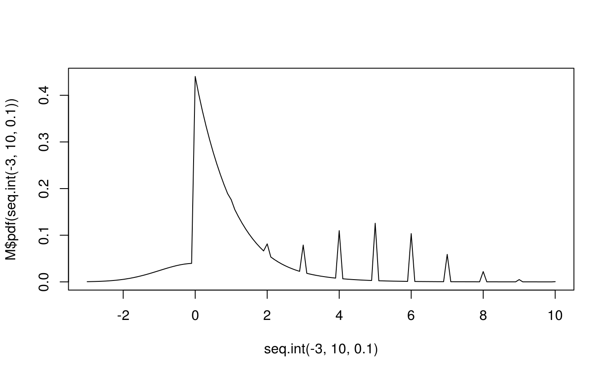

The previous tutorial introduced decorators in distr6. These are used to add numeric and more complex methods to the distribution interface. Wrappers are the next big distr6 feature and serve a similar purpose.
Just like decorators, wrappers are a design pattern commonly used in object-oriented programming. For people interested in these principles, we are specifically using the ‘Adapter’ pattern from Design Patterns (Gamma et al. 1994). Instead of simply adding methods, as decorators do, wrappers also slightly alter the interface of the object and usually result in a slightly different object being created. For example,
class(Normal$new())
#> [1] "Normal" "SDistribution" "Distribution" "R6"
class(truncate(Normal$new()))
#> [1] "TruncatedDistribution" "DistributionWrapper" "Distribution"
#> [4] "R6"See how the Normal distribution becomes an object of class TruncatedDistribution which in itself is of class DistributionWrapper. This tells the machine to expect a slightly different interface but it still recognises the original Normal distribution that is being wrapped.
All wrappers share a common method wrappedModels(). More often than not this is used internally but it’s still useful if you want to remind yourself of the original wrapped model.
You can also specify the name of the internal model to access it,
A slightly quicker approach is to use the description variable which is updated each time a distribution is wrapped
truncate(Normal$new(),-1,1)$description
#> [1] "Normal Probability Distribution. Truncated between -1 and 1."
huberize(truncate(Normal$new(),-3,3),-2,2)$description
#> [1] "Normal Probability Distribution. Truncated between -3 and 3. Huberized between -2 and 2."Or finally just look at the new distribution name
There are currently 8 wrappers in distr6, these can be listed with listWrappers(). They can be sectioned into two groups: composite wrappers and transformer wrappers. Composite wrappers create composite distributions, i.e. distributions that use internal functions to combine multiple distributions. Transformation wrappers perform some form of transformation on the distribution, e.g. scaling the distribution to a given mean or variance. We will look at three of these in detail and hopefully understanding the others will follow intuitively.
Note: The Convolution and Scale wrappers are still in an experimental lifecycle, meaning that we are aware they may be sub-optimal or bugs may be present.
This is perhaps the simplest wrapper in distr6. It can be constructed in one of two ways:
N <- Normal$new()
TruncatedDistribution$new(N, lower = -2, upper = 2)
#> TruncNorm(Norm_mean = 0, Norm_var = 1)
truncate(N, lower = -2, upper = 2)
#> TruncNorm(Norm_mean = 0, Norm_var = 1)In both cases, the result has to be saved to truncate the distribution as these are not methods in the Normal distribution class, i.e. to use the truncated normal distribution:
# This is a good example of when piping is clean and effective
library(magrittr)
tn <- Normal$new() %>% truncate(-2,2)
class(tn)
#> [1] "TruncatedDistribution" "DistributionWrapper" "Distribution"
#> [4] "R6"In the example above we are truncating the Normal distribution between the limits -2 and 2, this updates the distribution support accordingly and re-distributes the weights of the pdf and cdf
By default the quantile method isn’t added, but we could impute this using the FunctionImputation decorator:
A product distribution is a composite distribution in which two or more independent distributions are combined into a single joint distribution. Details about the maths behind this can be found in ?ProductDistribution. For now we use this as an example of the composite distributions in distr6. Say we want the product distribution of the binomial and normal distributions,
N <- Normal$new(mean = 2, var = 1)
B <- Binomial$new(size = 5, prob = 0.2)
P <- ProductDistribution$new(list(N, B))
print(P)
#> NormXBinom(Norm_mean = 2, Norm_var = 1, Binom_prob = 0.2, Binom_size = 5)
P$description
#> [1] "Product of:Normal Probability Distribution. Binomial Probability Distribution."
class(P)
#> [1] "ProductDistribution" "DistributionWrapper" "Distribution"
#> [4] "R6"Now we can treat P like any other multivariate distribution
A mixture distribution is a distribution with both continuous and discrete parts. It is formed by taking a weighted product of the respective distributions pdfs/cdfs. By default the weights are assumed to follow the uniform distribution, i.e. the probability of each distribution is identical, but this can be edited. Below we take the mixture of Binomial, Normal and Exponential distributions.
N <- Normal$new()
B <- Binomial$new()
E <- Exponential$new()
M <- MixtureDistribution$new(list(N, B, E), weights = c(0.1,0.5,0.4))
print(M)
#> NormMixBinomMixExp(Norm_mean = 0, Norm_var = 1, Binom_prob = 0.5, Binom_size = 10, Exp_rate = 1)
M$description
#> [1] "Mixture of: 1) Normal Probability Distribution. And 2) Binomial Probability Distribution. And 3) Exponential Probability Distribution. - With weights: (0.1, 0.5, 0.4)"
class(M)
#> [1] "MixtureDistribution" "DistributionWrapper" "Distribution"
#> [4] "R6"Whilst mixture distributions are composites, they are still univariate:
M$pdf(1)
#> [1] 0.1762317
N$pdf(1) * 0.1 + B$pdf(1) * 0.5 + E$pdf(1) * 0.4
#> [1] 0.1762317
M$cdf(1)
#> [1] 0.3423538
M$rand(4)
#> [1] 4.00000000 0.08143603 0.58020632 5.00000000
plot(x = seq.int(-3,10,0.1), y = M$pdf(seq.int(-3,10,0.1)),type="l")
There are plenty other wrappers to explore, including vector distributions that combine distributions into one vector and array distributions that are a type of product distribution for k-dimensional distributions of a specific type. The tools learnt from this tutorial are all applicable to every other wrapper and we hope you find the rest intuitive to use. In the next tutorial we look at how to create a custom distribution.